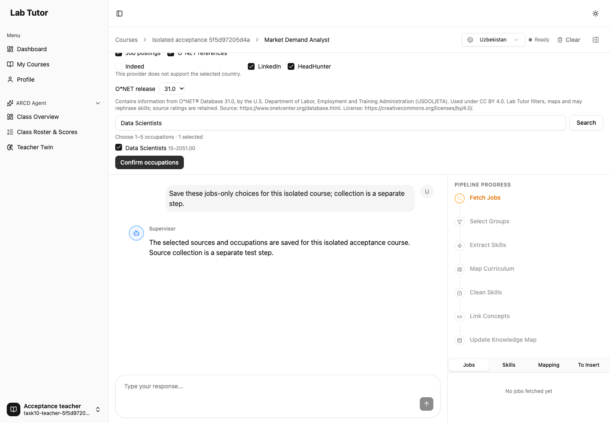
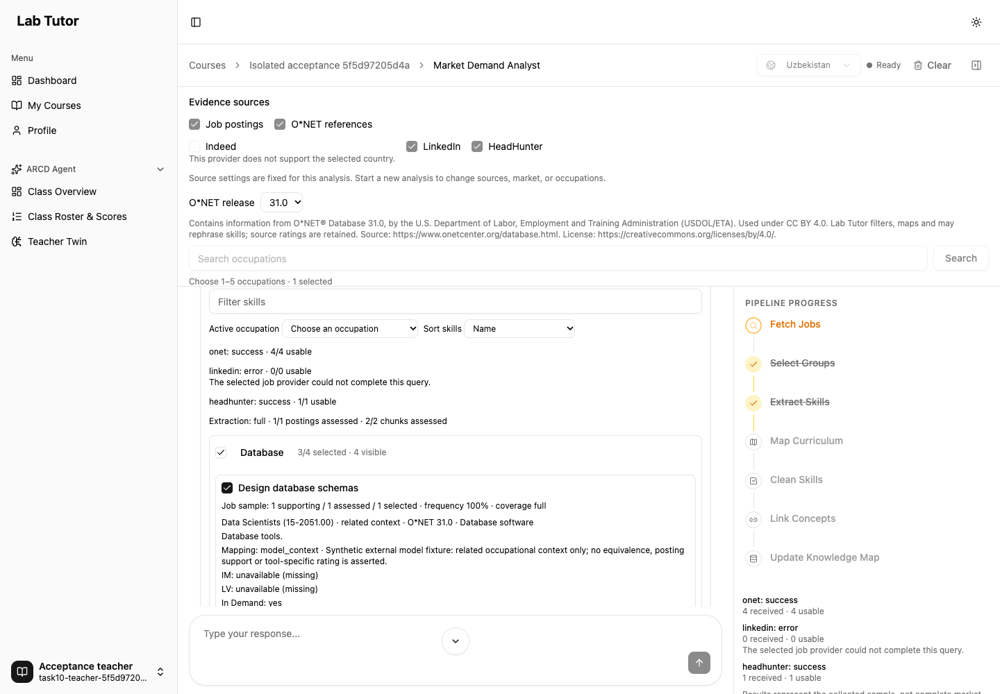
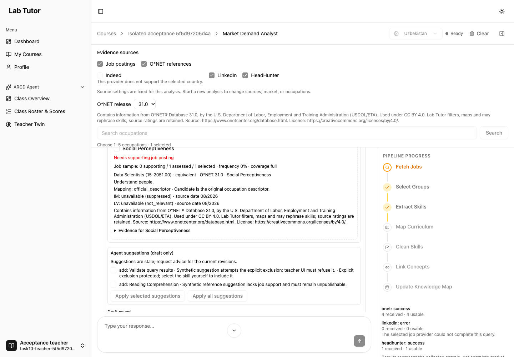
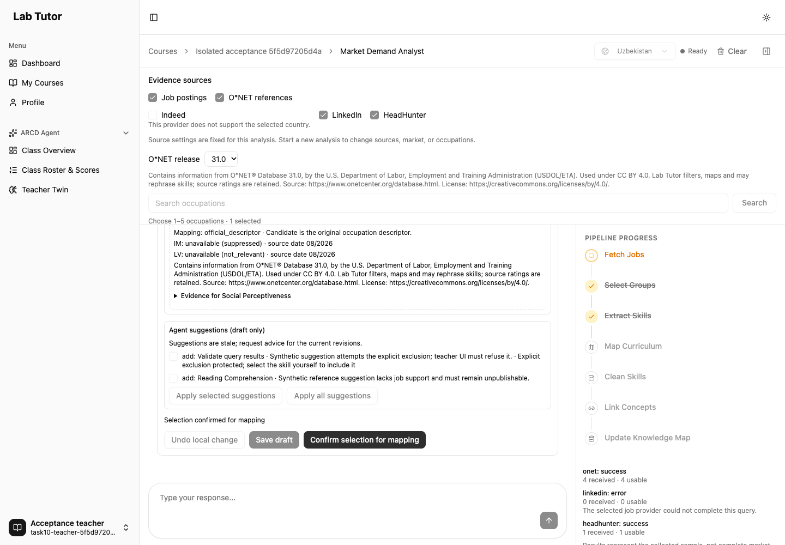
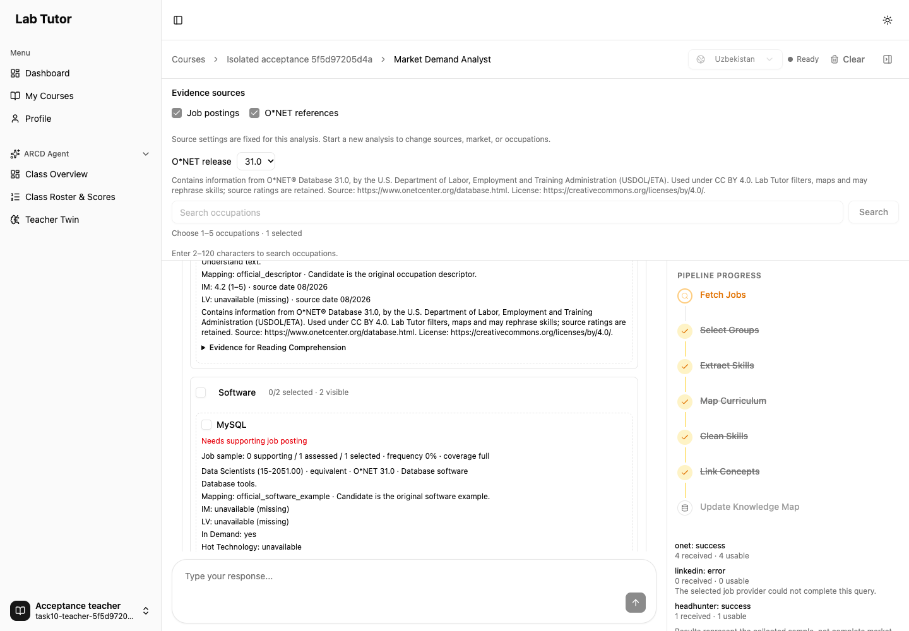
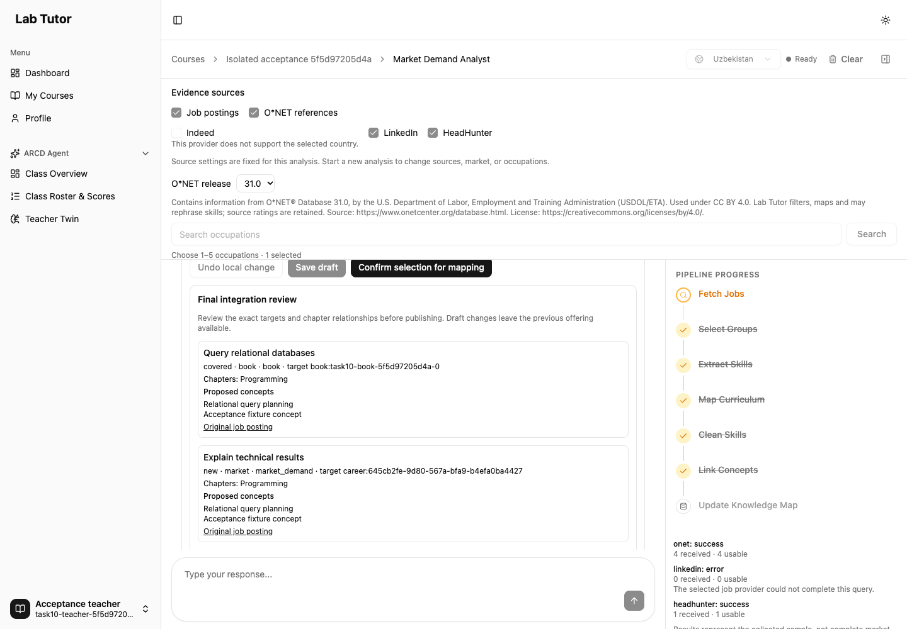
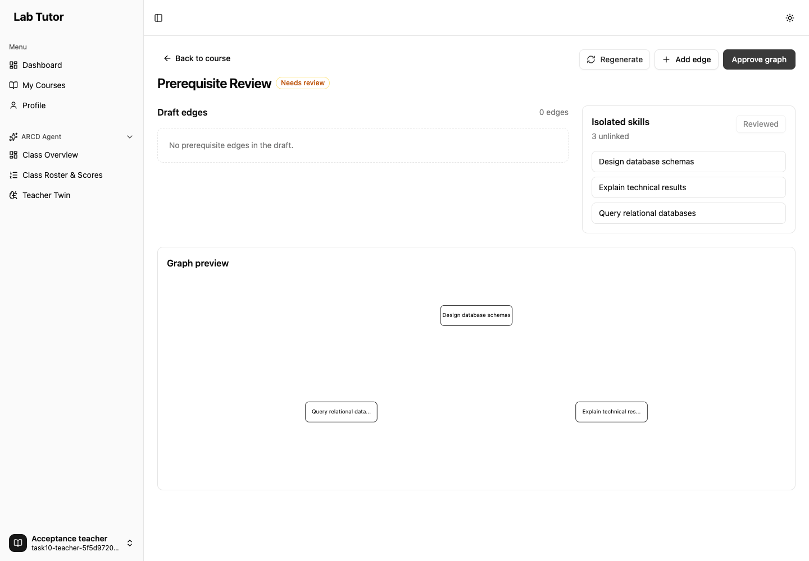
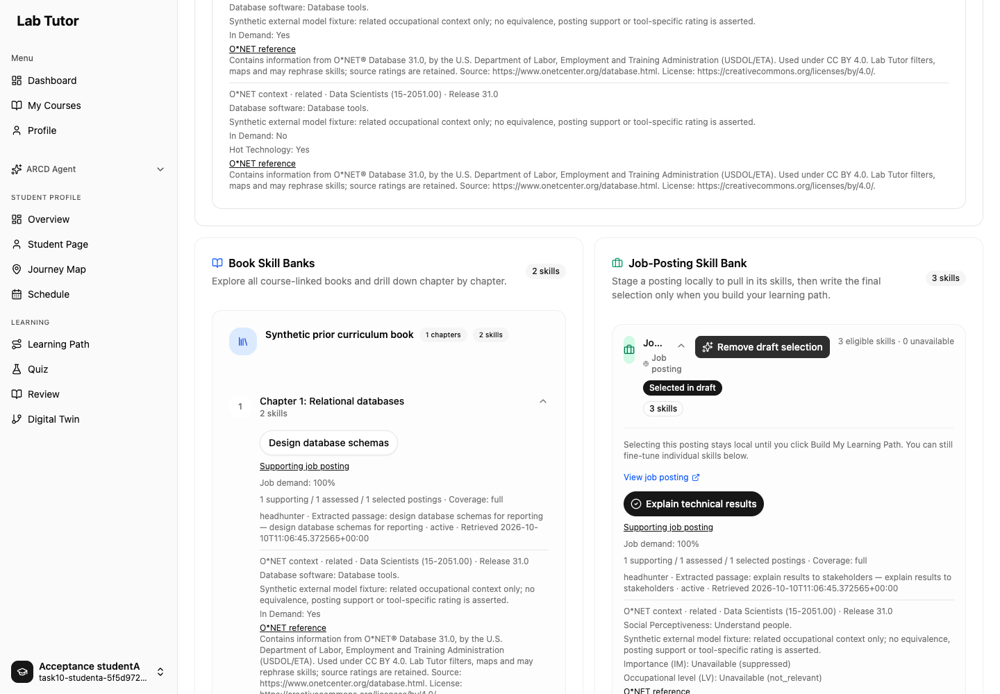
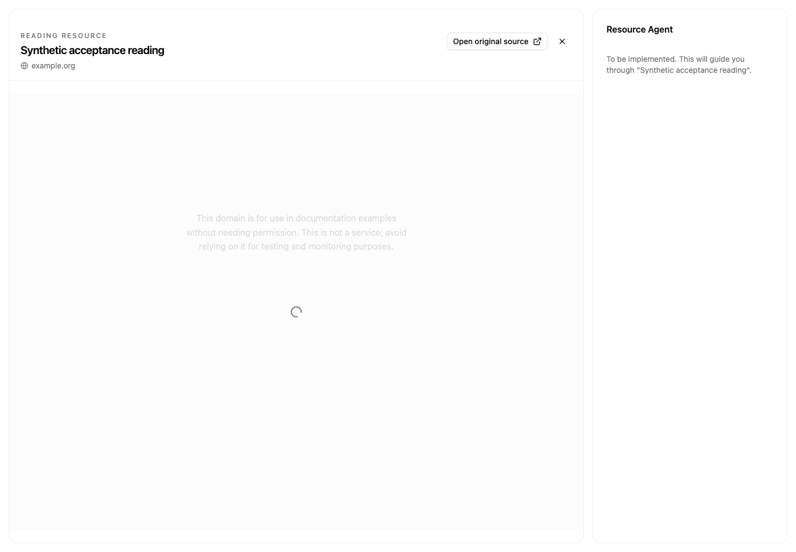
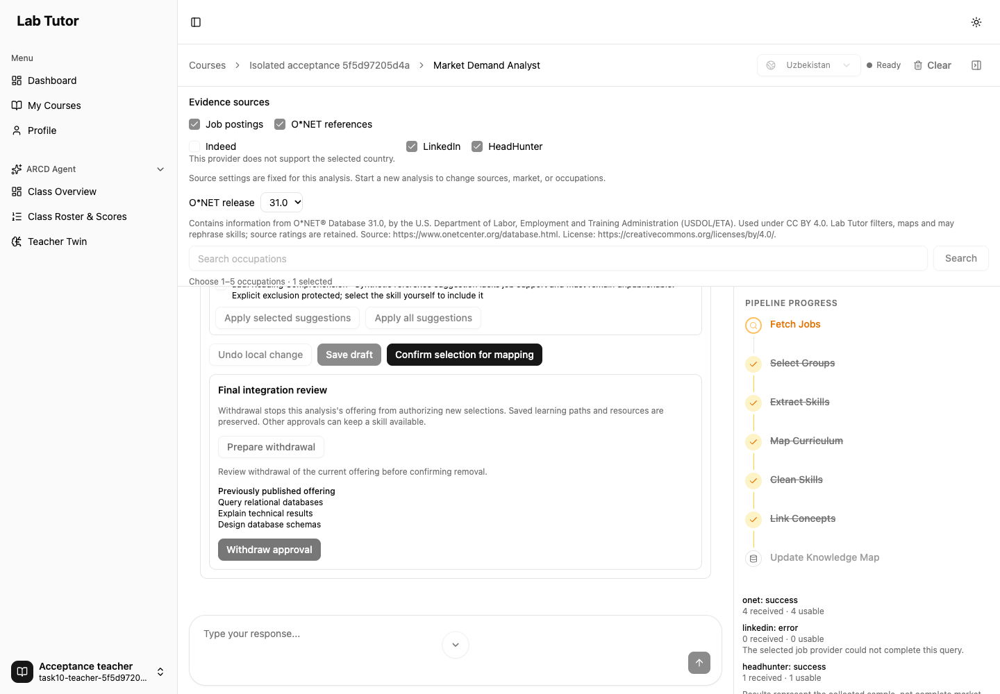

LAB TUTOR · WORKFLOW VERIFICATION
Teacher choices, student learning.
Results from the actual application in a headless browser, with a separate test API, PostgreSQL test database and disposable Neo4j graph.
External job-provider and language-model responses are synthetic fixtures. Authentication, application routes, persisted teacher decisions, evidence checks, graph publication, student selection and quiz grading run through the application. These checks do not establish live provider ingestion or resource-content quality.
| Scenario | Actual result | Detail |
|---|---|---|
| Choose sources and occupations | passed-with-skips | 4 checks; 1 coverage notes |
| Review evidence and select skills | passed-with-skips | 5 checks; 1 coverage notes |
| Apply agent advice while keeping exclusions | passed-with-skips | 2 checks; 1 coverage notes |
| Confirm the teacher shortlist | passed-with-skips | 2 checks; 1 coverage notes |
| Reject skills without job evidence | passed-with-skips | 3 checks; 1 coverage notes |
| Approve reviewed skill mappings | passed | 3 checks; 0 coverage notes |
| Regenerate and approve prerequisites | passed | 3 checks; 0 coverage notes |
| Choose skills and build a learning path | passed-with-skips | 4 checks; 1 coverage notes |
| Take a diagnostic quiz | passed | 4 checks; 0 coverage notes |
| Open learning resources | passed-with-skips | 4 checks; 1 coverage notes |
| Withdraw an offering and preserve saved work | passed-with-skips | 9 checks; 1 coverage notes |
Recovery and final stored evidence
- Saved questions survive provider failure — passed
- Resources recover without replacing saved choices — passed
- Saved recovery still works after withdrawal — passed
- Final direct PostgreSQL and graph readback — passed
Source collection, extraction, recommendations and mapping used the real tools between browser phases. External responses were controlled fixtures. Workflow readback.










